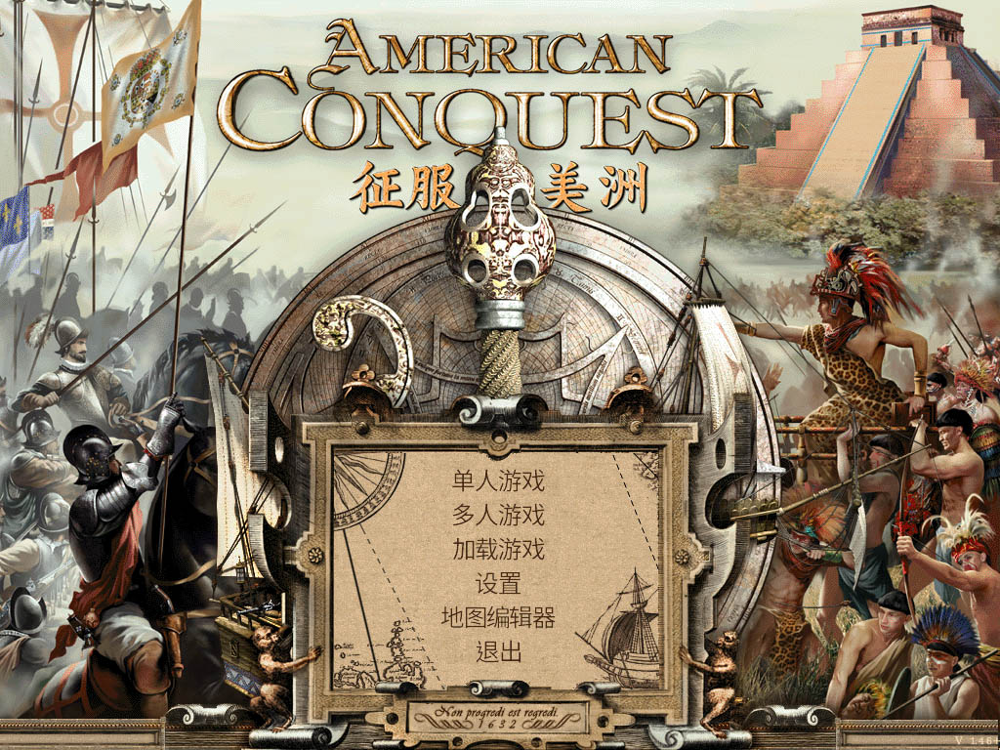

征服美洲 v1.46
American Conquest

『征服美洲』（American Conquest）v1.46版是『征服美洲』系列第一款游戏，由开发了『哥萨克』系列游戏的乌克兰GSC公司和德国CDV公司发布。游戏背景被设定在1492～1813年的美洲大陆。游戏中有12个不同的国家和部落（西班牙，英国，法国，阿兹台克，印加，玛雅，苏，特拉华州，休伦，易洛魁，普韦布洛，美国）和100种不同的单位和106种建筑单位。

主要特征：
◇具有历史背景的史诗般的即时战略；
◇地图上最多可16,000个单位同时战斗；
◇涵盖1492年至1813年之间300年历史；
◇8个激动人心战役，42个战役任务，包括皮萨罗的远征，七年战争，美国独立战争等；
◇6个多人模式下的历史战役；
◇9个独立单人任务；
◇12个不同的国家和民族：西班牙，英国，法国，阿兹特克，印加，玛雅，苏族，特拉华，休伦，易洛魁，美国和普韦布洛；
◇超过100种不同的单位和106种建筑物；
◇使用军官，鼓手和旗手的步兵，骑兵战术编队和加农炮配合作战；
◇真实的火枪、火炮效果，包括炮兵的移动和装弹动作，以及开枪与开炮；
◇战斗的士气受到死亡人数，杀敌数，食物供应，地形和军饷支付等情况的影响；
◇除了火枪攻击之外，所有射击单位都可以用刺刀或刀剑攻击；
◇所有建筑物都可以被军队占领、攻击或对外射击；
◇堡垒、堡垒要塞和碉堡可以有效的对外开枪、开炮来进行防御，堡垒里还可以训练出士兵；
◇通过独特的地图缩放模式给玩家带来更大的视角范围；
◇巨大的地图和4种不同的气候环境；
◇所有动作都有详细的动画，包括火枪兵、炮兵装载弹药，农民收割粮食等；
◇复杂的外交制度允许玩家与中立部落建立联盟，购买士兵或换取资源；
◇自然环境可以作为战略条件：峡谷作为隐藏或埋伏起点，站在山上可以增加射击范围；
◇多人模式可通过局域网或互联网多达7名玩家：死亡竞赛，历史战役等；
◇各种尺寸的随机地图和多种起始条件设置，无限游戏乐趣；
征服美洲 v1.46 官方正版 (英文) |
||
|
请到本站 中文补丁板块 下载相应版本的中文补丁
支持操作系统：Windows XP / Windows 7 / Windows 8 / Windows 10
|
||
征服美洲 v1.46 免安装 中文版 |
||
|
请使用浏览器直接下载
支持操作系统：Windows XP / Windows 7 / Windows 8 / Windows 10
|
||
征服美洲-黄金版 不仅包含了 征服美洲 v1.46 的12个国家民族，还多了大明、朝鲜、日本、纳齐兹、荷兰、德意志、俄罗斯、海达、葡萄牙 8个国家，并且包含 征服美洲 v1.46 的战役，推荐下载 征服美洲-黄金版 以获得更好的游戏体验！